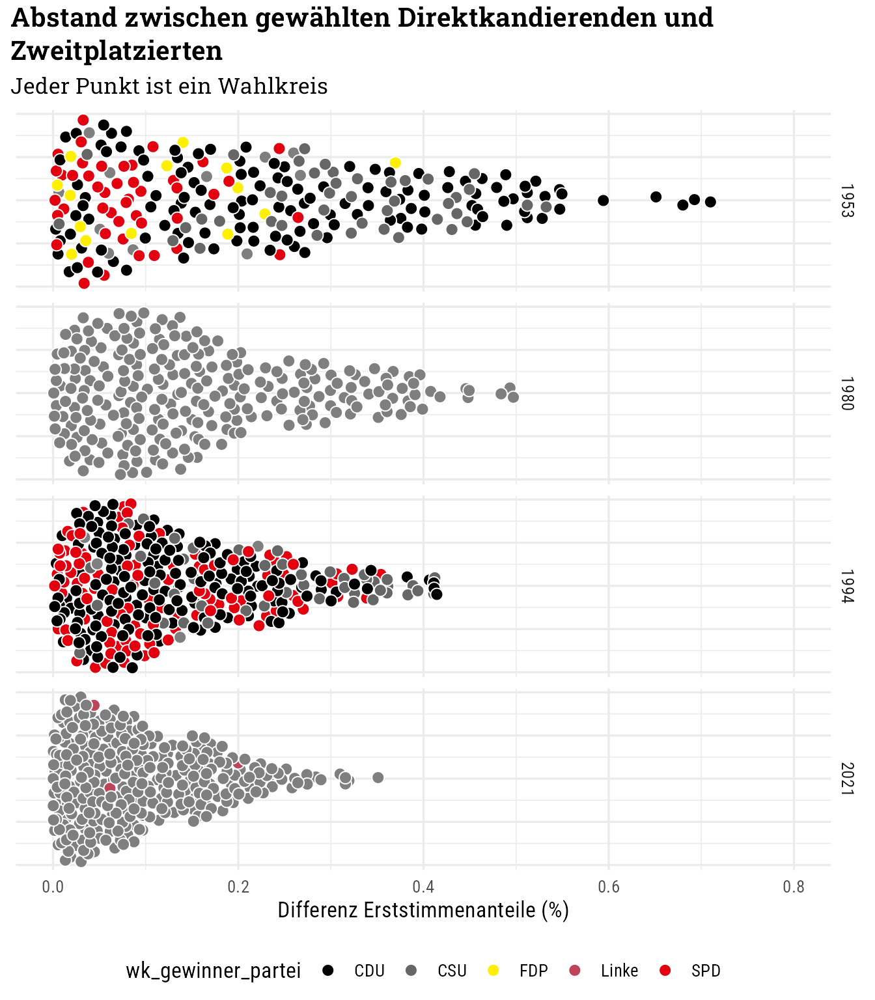
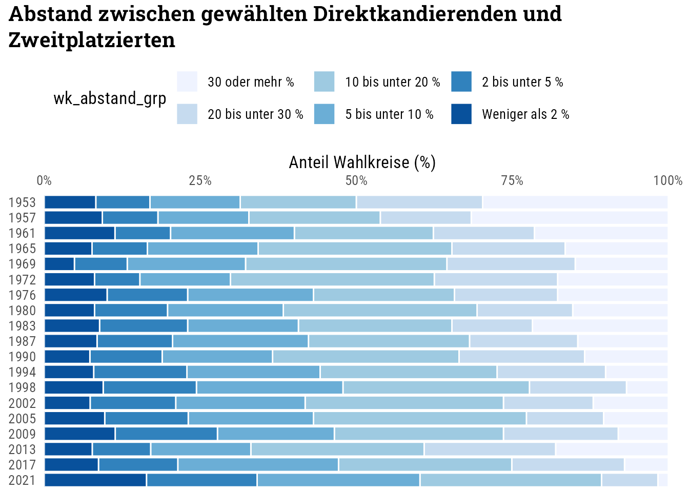

Code
library(tidyverse)
library(ggtext)
library(here)
knitr::opts_chunk$set(dev = "ragg_png")
source(here("R", "custom-theme.R"))
theme_set(theme_custom())library(tidyverse)
library(ggtext)
library(here)
knitr::opts_chunk$set(dev = "ragg_png")
source(here("R", "custom-theme.R"))
theme_set(theme_custom())Die Datensätze mit den Stimmenanteilen in den Wahlkreisen bei den Bundestagswahlen 1949 bis 2021 weisen zahlreiche unterschiedliche Formate und Zeichencodierung auf. Dieser Code berücksichtigt die Unterschiede.
Bei der ersten Bundestagswahl von 1949 hatten die Wählenden nur eine Stimme.
# Seit 2005 ist die Partei nur einmal in der obersten Headerzeile genannt,
# danach leere Spalten
expand_header <- function(header) {
parts <- str_split(header, ";")
expanded <- accumulate(parts, ~ ifelse(.y == "" | is.na(.y), .x, .y))
expanded
}
prepare_header <- function(x, year) {
x <- x |>
unlist() |>
as.character()
if (year > 1949) {
x <- expand_header(x)
}
x
}
has_data <- function(x) {
sum(!is.na(x)) > 0
}
load_data <- function(year) {
filename <- here("data", "Wahlkreise",
"btw_kerg", sprintf("btw%s_kerg.csv", year))
encoding <- guess_encoding(filename) |>
pull(encoding) |>
head(1)
df_wk_head_lines <- read_lines(filename,
locale = locale("de", encoding = encoding), n_max = 10)
# Erste Datenzeile finden
# unterschiedliche Struktur:
## bis einschließlich 2017 sind die ersten Nichtdatenzahlen mit # vorangestellt
if (year <= 2017) {
skip_rows <- max(which(str_detect(df_wk_head_lines, "^#")))
} else {
skip_rows <- 2 # 2021
}
# Kopfzeile extrahieren und neu kombinieren (einzeilig)
## Ab 2002 haben die Datensätze eine 3. Kopfzeile: "Endgültig,Vorperiode"
df_wk_head <- read_csv2(filename,
locale = locale("de", encoding = encoding),
skip = skip_rows, # n_max = 100,
col_names = FALSE,
show_col_types = FALSE)
# Leere Spalten am Ende entfernen
df_wk_head <- select(df_wk_head, where(has_data))
header_1 <- prepare_header(df_wk_head[1, ], year)
header_2 <- prepare_header(df_wk_head[2, ], year)
colnames_combined <- case_when(
header_1 == "" | is.na(header_1) ~ header_2,
header_2 == "" | is.na(header_2) ~ header_1,
TRUE ~ paste(header_1, header_2, sep = "_")
)
if (year >= 2005) {
skip_rows <- skip_rows + 1
header_3 <- df_wk_head[3, ] |> unlist() |> as.character()
colnames_combined <- ifelse(
header_3 != "" & !is.na(header_3),
paste(colnames_combined, header_3, sep = "_"), colnames_combined)
}
# head(colnames_combined, 10)
# Daten vollständig einlesen
df_wk <- read_csv2(filename, skip = skip_rows + 2, col_names = FALSE,
show_col_types = FALSE)
# df_wk <- select(df_wk, where(has_data))
colnames(df_wk) <- colnames_combined
# In manchen Dateien sind leere Spalten ohne Spaltennamen (NA) enthalten
df_wk <- df_wk[!is.na(names(df_wk))]
# Entferne Variablen der Vorperiode (ab 2009)
if (year >= 2005) {
df_wk <- df_wk |>
select(-ends_with("_Vorperiode"))
}
# Angleichung der Spaltennamen
if (year == 1949) {
df_wk <- df_wk |>
rename(wknr = 1, wkname = 2, bundesland = 3,
wahlberechtigte = 4,
waehler = 5,
ungueltige = 6,
gueltige = 7) |>
filter(!is.na(wknr))
} else if (year > 1949 & year < 2005) {
df_wk <- df_wk |>
rename(wknr = 1, wkname = 2, bundesland = 3,
wahlberechtigte = 4,
waehler = 5,
ungueltige = 6, ungueltige_Zweitstimmen = 7,
gueltige_Erststimmen = 8, gueltige_Zweitstimmen = 9) |>
filter(!is.na(wknr))
} else {
df_wk <- df_wk |>
rename(wknr = 1, wkname = 2, bundesland = 3,
wahlberechtigte = 4, wahlberechtigte_Zweitstimmen = 5,
waehler = 6, waehler_Zweitstimmen = 7,
ungueltige = 8, ungueltige_Zweitstimmen = 9,
gueltige_Erststimmen = 10, gueltige_Zweitstimmen = 11) |>
select(-c(wahlberechtigte_Zweitstimmen, waehler_Zweitstimmen,
ungueltige_Zweitstimmen)) |>
filter(!is.na(wknr))
colnames(df_wk) <- str_remove(colnames(df_wk), "_Endgültig")
}
# Long format
if (year == 1949) {
df_wk_long <- df_wk |>
pivot_longer(cols = -c(wknr:gueltige),
# Zwecks Konsistenz bewusst in partei und stimme splitten,
# obwohl es die Namensstruktur hier nicht gibt
names_to = c("partei", "stimme"), names_sep = "_",
values_to = "anzahl") |>
pivot_longer(cols = wahlberechtigte:gueltige,
names_to = c("kennzahl", "stimme2"), names_sep = "_",
values_to = "anzahl_basis")
} else {
df_wk_long <- df_wk |>
pivot_longer(cols = -c(wknr:gueltige_Zweitstimmen),
names_to = c("partei", "stimme"), names_sep = "_",
values_to = "anzahl") |>
pivot_longer(cols = wahlberechtigte:gueltige_Zweitstimmen,
names_to = c("kennzahl", "stimme2"), names_sep = "_",
values_to = "anzahl_basis") |>
filter(is.na(stimme2) | stimme == stimme2)
}
df_wk_long <- df_wk_long |>
select(-stimme2) |>
mutate(
wknr = as.integer(wknr),
bundesland = as.character(bundesland),
kennzahl = kennzahl) |>
pivot_wider(
names_from = "kennzahl", values_from = "anzahl_basis",
values_fn = min
) |>
mutate(anteil = anzahl / gueltige) |>
relocate(anteil, .before = 7)
df_wk_long
}btw_years <- c(1949, 1953, 1957, 1961, 1965, 1969, 1972, 1976, 1980, 1983, 1987, 1990,
1994, 1998, 2002, 2005, 2009, 2013, 2017, 2021)
load_data_safely <- safely(load_data)
dfs_wk <- map(btw_years, load_data_safely)# dfs_wk |>
# transpose() |>
# View()dfs_wk <- map(btw_years, load_data)
dfs_wk <- set_names(dfs_wk, btw_years)
df_wk_alle <- bind_rows(dfs_wk, .id = "wahl")prepare_firstvote_data <- function(x) {
x |>
# Nur Erststimmen auf Wahlkreisebene
filter(stimme == "Erststimmen" & wknr < 900 & bundesland != "99") |>
# filter(stimme == "Erststimmen") |>
select(wknr, wkname, bundesland, partei, anteil) |>
na.omit() |>
# Erst- und Zweitplatzierte
group_by(wknr) |>
slice_max(order_by = anteil, n = 2, with_ties = FALSE) |>
arrange(-anteil, .by_group = TRUE) |>
# Abstand zum Zweitplatzierten
mutate(anteil_zweiter = lead(anteil, default = NULL)) |>
# Den Zweitplatzierten entfernen
filter(!is.na(anteil_zweiter)) |>
ungroup() |>
rename(wk_gewinner_partei = partei, anteil_gewinner = anteil) |>
mutate(wk_abstand = anteil_gewinner - anteil_zweiter) |>
mutate(wk_gewinner_partei = case_match(
wk_gewinner_partei,
"GRÜNE" ~ "Grüne",
"DIE LINKE" ~ "Linke",
.default = wk_gewinner_partei
))
}dfs_wk_abstand <- map(dfs_wk, prepare_firstvote_data)library(ggbeeswarm)
dfs_wk_abstand |>
bind_rows(.id = "wahl") |>
filter(wahl %in% c("1953", "1980", "1994", "2021")) |>
ggplot(aes(wk_abstand, y = 1)) +
geom_quasirandom(
aes(fill = wk_gewinner_partei),
shape = 21, color = "white", size = 3
) +
scale_x_continuous(limits = c(0, 0.8)) +
scale_fill_manual(values = c("CSU" = "grey40", party_pal)) +
facet_grid(vars(wahl)) +
labs(
title = "Abstand zwischen gewählten Direktkandierenden und<br>
Zweitplatzierten",
subtitle = "Jeder Punkt ist ein Wahlkreis",
x = "Differenz Erststimmenanteile (%)",
) +
theme(
legend.position = "bottom",
axis.text.y = element_blank(),
axis.title.y = element_blank()
) 
dfs_wk_abstand |>
bind_rows(.id = "wahl") |>
# Abstand gruppiert
arrange(wk_abstand) |>
mutate(wk_abstand_grp = case_when(
wk_abstand < 0.02 ~ "Weniger als 2 %",
wk_abstand < 0.05 ~ "2 bis unter 5 %",
wk_abstand < 0.10 ~ "5 bis unter 10 %",
wk_abstand < 0.20 ~ "10 bis unter 20 %",
wk_abstand < 0.30 ~ "20 bis unter 30 %",
TRUE ~ "30 oder mehr %"),
wk_abstand_grp = fct_inorder(wk_abstand_grp),
wk_abstand_grp = fct_rev(wk_abstand_grp),
wahl = fct_rev(wahl)
) |>
arrange(wahl, wknr) |>
count(wahl, wk_abstand_grp, name = "n_wahlkreise") |>
group_by(wahl) |>
mutate(anteil = n_wahlkreise / sum(n_wahlkreise)) |>
ungroup() |>
ggplot(aes(anteil, wahl, fill = wk_abstand_grp)) +
geom_col(col = "white") +
scale_x_continuous(
labels = scales::label_percent(), position = "top",
expand = expansion(mult = c(0, 0.02))) +
scale_fill_brewer() +
labs(
title = "Abstand zwischen gewählten Direktkandierenden und<br>
Zweitplatzierten",
x = "Anteil Wahlkreise (%)",
y = NULL
) +
theme(
legend.position = "top",
legend.justification = "left",
panel.grid = element_blank()
) 
dfs_wk_abstand |>
bind_rows(.id = "wahl") |>
group_by(wahl) |>
summarize(
anteil_lt10 = mean(wk_abstand < 0.1),
anteil_gt30 = mean(wk_abstand > 0.3),
anteil_gewinner_gt50 = mean(anteil_gewinner > 0.5)
) |>
ggplot(aes(wahl, group = 1)) +
geom_line(aes(y = anteil_lt10, col = "Kleiner 10 %"), linewidth = 1) +
geom_line(aes(y = anteil_gt30, col = "Größer als 30 %"), linewidth = 1) +
geom_line(aes(y = anteil_gewinner_gt50,
col = "Stimmenanteil Gewinner größer als 50 %"), linewidth = 1) +
scale_y_continuous(labels = scales::label_percent()) +
scale_color_manual(values = color_pal[2:4]) +
labs(
title = "Mehr Wahlkreise mit knappen Ausgang und weniger Wahlkreise,<br>die mit absoluter Mehrheit gewonnen werden",
x = NULL,
y = "Anteil (%)",
col = "Wahlausgang"
) +
theme(legend.position = "top")